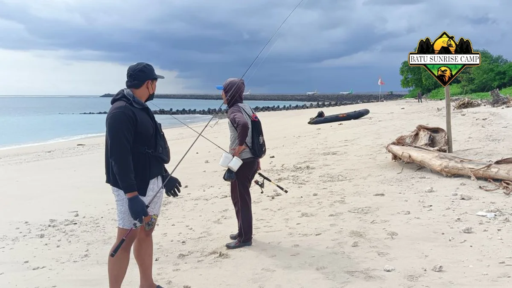

Aturan memancing di pantai wisata mencakup izin pengelola, zona yang diperbolehkan, alat tangkap legal, serta kewajiban menjaga kebersihan dan keselamatan pengunjung lain.
- Tidak semua pantai wisata mengizinkan memancing, sehingga izin dan zona harus ditanyakan ke pengelola sebelum memasang alat.
- Cara menangkap ikan dengan bahan peledak atau racun dilarang oleh peraturan perikanan Indonesia.
- Pantai populer dapat padat saat libur, misalnya kunjungan wisatawan pantai selatan Tulungagung yang dilaporkan naik 16 persen pada libur Lebaran 2026.
- Senar, kail, dan umpan bekas harus dibawa pulang karena berbahaya bagi satwa dan pengunjung.
- Pengelola dan warga setempat adalah sumber aturan paling akurat untuk setiap pantai.
Apa Saja Aturan Dasar Memancing di Pantai Wisata?
Aturan dasarnya meliputi meminta izin pengelola, memancing di zona yang diperbolehkan, menjauhi area renang, memakai alat legal, dan membersihkan seluruh sampah sebelum pergi.
Pantai wisata adalah ruang bersama bagi keluarga, perenang, penggiat camping, dan pemancing. Karena itu, aturan memancing biasanya ditetapkan oleh pengelola atau pemerintah desa dan dapat berbeda antar pantai.
Aturan yang paling sering dijumpai meliputi pembatasan jam, pembatasan zona dekat perenang, kewajiban membayar retribusi, dan larangan meninggalkan sampah.
Pengunjung tidak perlu menebak. Tanyakan langsung kepada petugas loket, penjaga pantai, atau pengelola area camping saat tiba.
Pertanyaan sederhana seperti zona mana yang boleh dipakai sering menghindarkan teguran atau konflik. Untuk gambaran keseluruhan pantai yang cocok dipilih, baca panduan pantai untuk camping sekaligus mancing.
Apakah Semua Pantai Boleh Dipakai untuk Memancing?
Tidak semua pantai boleh dipakai memancing, karena sebagian berstatus kawasan konservasi, zona renang, atau area yang dikelola khusus dengan aturan pengunjung yang lebih ketat.
Sebagai contoh, detikJatim memberitakan bahwa salah satu pantai di Trenggalek dikenal sebagai lokasi konservasi berbasis masyarakat dan menjadi tempat pendaratan tahunan berbagai jenis penyu.
Pada kawasan seperti ini, aktivitas pengunjung biasanya diatur lebih ketat demi melindungi satwa, dan memancing bisa dibatasi atau dilarang.
Aturan juga dapat berubah mengikuti musim dan kebijakan daerah. Pemkab Pacitan, misalnya, dilaporkan mendorong pengelolaan wisata camping yang tertib, aman, dan ramah lingkungan, seiring meningkatnya kunjungan camping pantai pada akhir 2025.
Karena itu, anggap informasi lama sebagai petunjuk awal saja, dan konfirmasi ulang aturan terbaru ke pengelola setiap kali berkunjung.
Alat dan Cara Menangkap Ikan Apa yang Dilarang?
Cara menangkap ikan yang dilarang meliputi penggunaan bahan peledak, racun, setrum listrik, dan alat tangkap merusak lainnya, karena peraturan perikanan Indonesia melarangnya demi menjaga ekosistem.
Memancing rekreasi dengan joran, senar, dan kail adalah kegiatan yang umum diizinkan, selama dilakukan di lokasi yang sesuai aturan.
Sebaliknya, praktik yang merusak habitat dan membahayakan manusia dilarang secara hukum.
Peraturan tentang perikanan di Indonesia mengatur hal ini, dan informasi resminya dapat dibaca melalui situs Kementerian Kelautan dan Perikanan.
Pemancing rekreasi sebaiknya juga menghindari alat berukuran berlebihan yang memicu keluhan pengunjung lain, seperti jaring besar di area renang. Selain melanggar etika, pemakaian alat seperti itu dapat menyebabkan teguran dari pengelola.
Informasi ini bersifat umum, dan untuk pertanyaan hukum yang spesifik, pembaca perlu merujuk langsung pada peraturan resmi atau berkonsultasi dengan pihak berwenang.

Menerapkan etika memancing dengan menjaga jarak aman dari pengunjung lain serta membawa pulang sampah senar melindungi kelestarian lingkungan pesisir.
Bagaimana Etika Memancing di Dekat Pengunjung dan Nelayan?
Etika dasarnya adalah menjaga jarak aman dari pengunjung dan perenang, tidak merebut titik nelayan setempat, melempar dengan hati-hati, dan menghormati ketenangan area camping.
Lemparan pancing dengan pemberat dan kail dapat melukai orang di sekitar. Pastikan area belakang dan samping kosong sebelum melempar, dan hindari memancing berdampingan dengan perenang.
Di pantai yang menjadi basis nelayan, seperti kawasan teluk berkampung nelayan, hormati titik tambat perahu dan jalur jaring.
Pada malam hari, jaga volume suara dan arahkan lampu kepala ke bawah agar tidak mengganggu tenda lain.
Gunakan juga pengetahuan keselamatan dasar yang dibahas pada artikel keselamatan memancing di pantai saat camping, terutama tentang alas kaki antiselip dan jarak dari ombak.
Sikap ramah dan terbuka kepada warga biasanya mendatangkan manfaat nyata. Nelayan lokal sering bersedia berbagi informasi tentang arus dan titik yang aman tanpa diminta.
Bagaimana Mengelola Senar dan Sampah Pancing Saat Camping?
Senar, kail, dan umpan bekas wajib dikumpulkan dan dibawa pulang, karena senar yang tercecer dapat menjerat satwa, melukai pengunjung, dan mencemari pantai dalam waktu lama.
Senar nilon bening sulit terlihat dan lambat terurai. Gulung senar bekas, masukkan ke wadah tertutup, lalu buang di tempat sampah yang tepat.
Kail yang patah sebaiknya dibungkus kertas tebal atau botol bekas sebelum dibuang agar tidak melukai petugas kebersihan.
Sisa umpan dan jeroan ikan perlu dikelola dengan baik. Kubur di lokasi yang diizinkan atau bawa pulang dalam kantong tertutup, karena sisa ikan menarik hewan liar dan menimbulkan bau pada area camping.
Untuk makanan hasil tangkapan, ikuti panduan cara menyimpan makanan camping pantai agar awet agar tidak cepat busuk.
Bagaimana Cara Mengurus Izin Memancing ke Pengelola Pantai?
Cara mengurus izin adalah melapor ke pengelola saat tiba, menanyakan zona dan jam memancing, membayar retribusi bila ada, lalu mencatat nomor kontak untuk keperluan darurat.
Langkah sederhananya sebagai berikut:
- Lapor di loket atau kepada penjaga pantai begitu tiba di lokasi.
- Sebutkan jumlah orang, rencana bermalam, dan rencana memancing.
- Tanyakan zona yang boleh dipakai serta area yang terlarang.
- Tanyakan retribusi tambahan untuk camping atau memancing, bila ada.
- Simpan nomor kontak pengelola untuk kondisi darurat.
Proses ini biasanya hanya memakan beberapa menit, tetapi memberi perlindungan besar. Pengunjung yang sudah melapor lebih mudah dibantu bila terjadi kecelakaan atau perubahan cuaca. Jika pengunjung membawa rombongan besar, laporkan jumlahnya sebelum mendirikan tenda.
Apa Kesalahan Umum yang Melanggar Aturan Memancing di Pantai?
Kesalahan umum meliputi memancing tanpa bertanya, memakai area renang, meninggalkan senar bekas, mengambil titik nelayan, dan menyalahgunakan informasi lama tentang aturan pantai.
Beberapa pelanggaran yang sering terjadi tanpa disadari:
- Memancing di dekat perenang. Kail dan pemberat dapat melukai orang.
- Mengabaikan papan larangan. Papan di pintu masuk sering memuat aturan terbaru.
- Menganggap pantai sepi berarti bebas aturan. Pantai terpencil pun punya pengelola atau warga yang menjaga.
- Membuang sisa ikan sembarangan. Bau dan sisa ikan mengganggu pengunjung lain.
- Mengandalkan informasi lama. Tarif dan aturan dapat berubah, jadi tanyakan langsung.
Menghindari pelanggaran ini menjaga hubungan baik dengan warga dan membantu pantai tetap terbuka bagi pemancing berikutnya.
Kesimpulan
Patuhi izin pengelola, pilih zona yang diperbolehkan, hindari alat tangkap terlarang, jaga etika terhadap pengunjung dan nelayan, serta bawa pulang seluruh sampah pancing.
Mulailah dengan bertanya sebelum memasang joran. Aturan yang berlaku di satu pantai belum tentu berlaku di pantai lain, dan aturan dapat berubah sewaktu-waktu. Informasi dalam artikel ini bersifat umum dan tidak menggantikan peraturan resmi yang berlaku di lokasi.

Pertanyaan yang sering diajukan (FAQ)